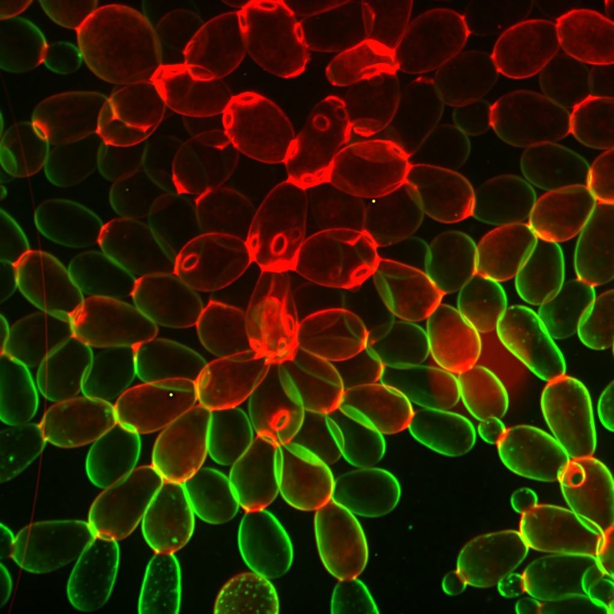
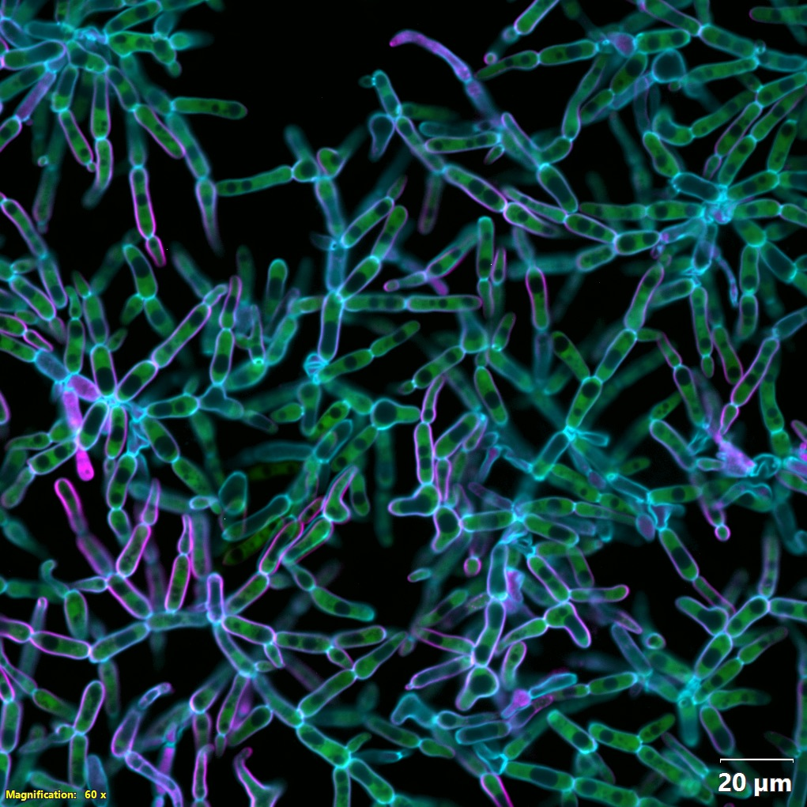
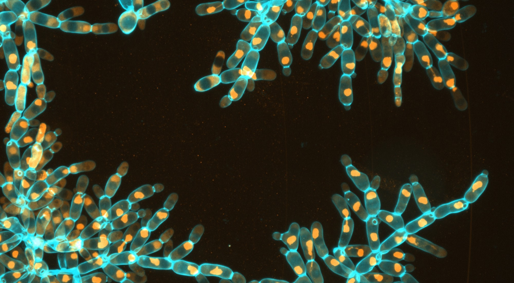
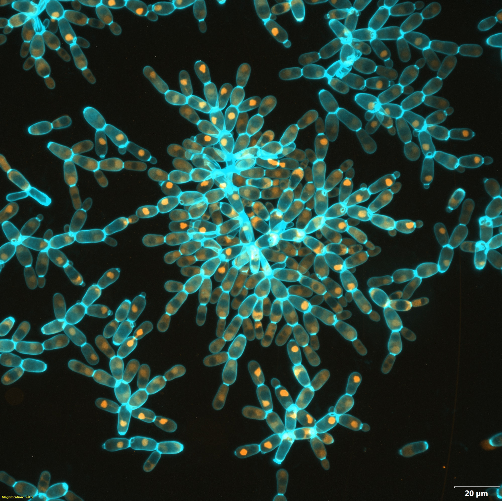
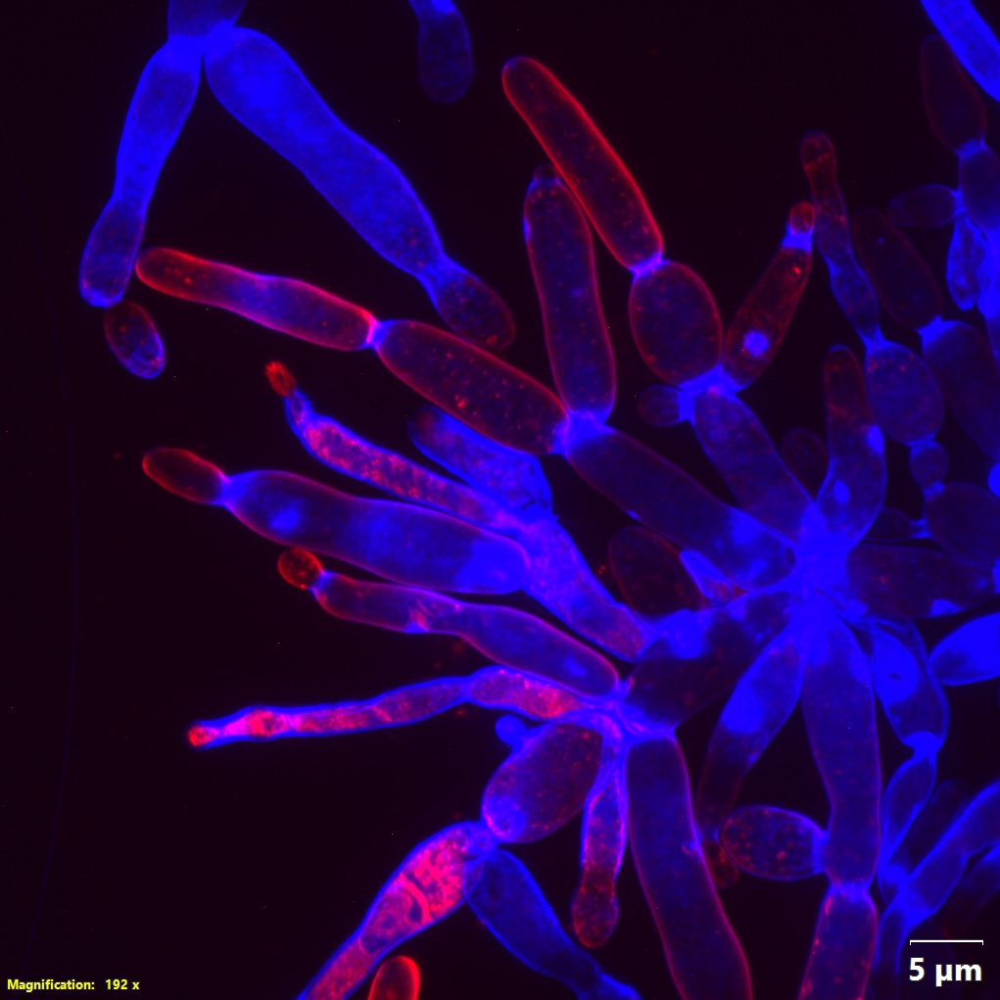
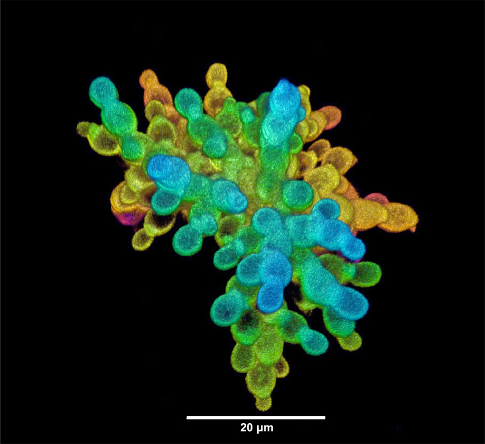
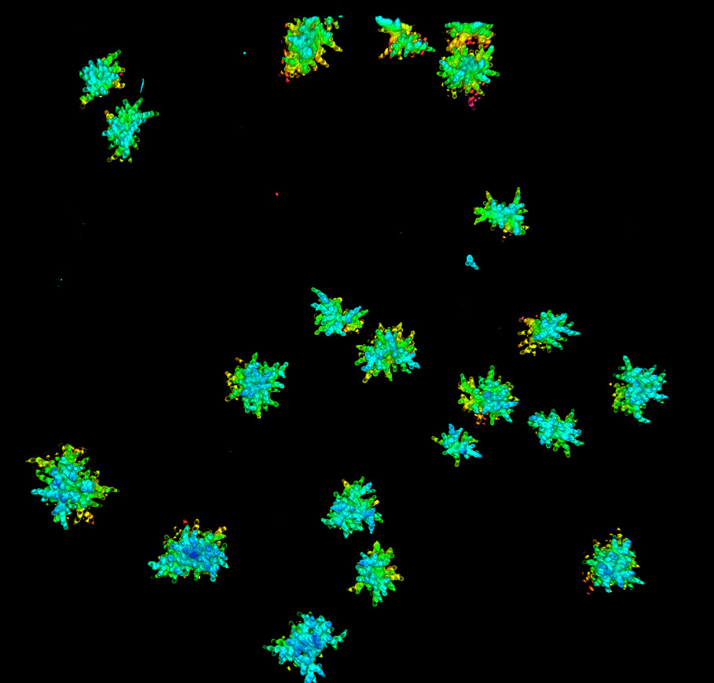
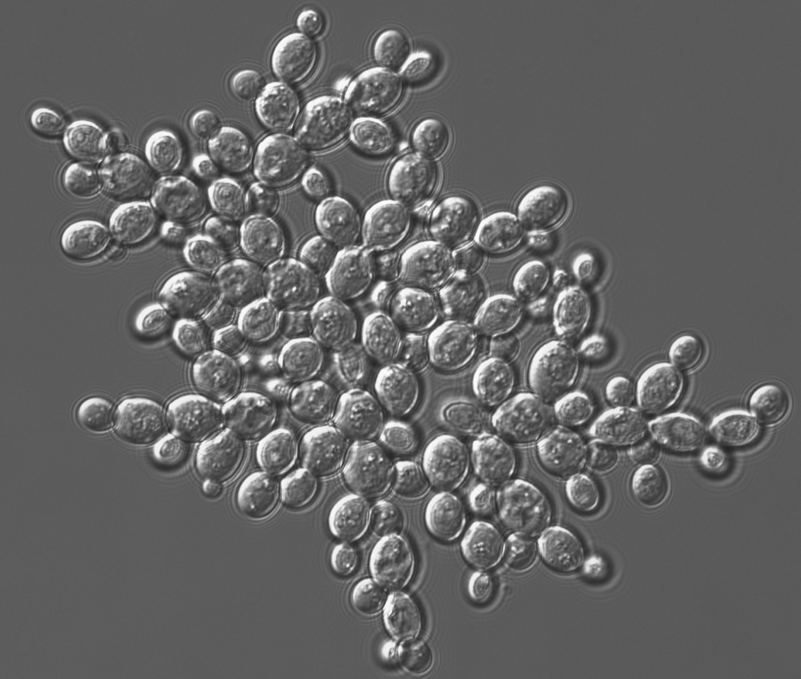

We founded fifteen initially isogenic populations of ace2Δ
snowflake yeast in 2018, all derived from the Saccharomyces cerevisiae Y55
background. Five replicates went into each of three metabolic environments. The daily
selection is identical across all fifteen: about 24 hours of growth, then a settling step in
which only the fastest-settling fraction is carried forward. Only the metabolism differs.
PA, anaerobic. PM, mixotrophic. PO, obligately aerobic. Five
replicates per treatment. Click any treatment to view archived strains.
Treatment one · five replicates
PA1–5, anaerobic
Plate 01
Line
Anaerobic; replicate not recorded
Timepoint
Day 600
Annotation
None burned in
PA1–5 Anaerobic
The only treatment that became macroscopic
Medium
Not named in the published record
Constraint
Obligate fermentation; petite, cannot respire
Replicates
5 (PA1, PA2, PA3, PA4, PA5)
Outcome
Millimetre-scale bodies in all five
The PA lines are petite mutants: mitochondrially dysfunctional, unable to grow on
glycerol, and confirmed non-respiring by direct oxygen measurement with optodes. Because
they never use oxygen, oxygen cannot become scarce inside a large cluster, so the diffusion
cost that normally penalises large size is absent. This treatment was designed to test
whether size evolution proceeds once that cost is removed. It did, in all five replicates,
producing organisms roughly 20,000-fold larger by volume.
SIZE
Mean cluster radius rose from 16 to 434 µm over 600 daily transfers
Biomass-weighted cluster radius increased about 27-fold in linear dimension, an
estimated volume increase of roughly 2 × 104. Groups went
from around 100 cells to around 450,000. All five anaerobic populations became
macroscopic, visible without a microscope, and the clonal life cycle was retained
throughout.
The material went from weaker than gelatin to the strength and toughness of wood
The ancestor fractures at about 240 Pa with toughness as low as
8.9 J m−3. Evolved macroscopic clusters exceed
0.6 MJ m−3. Individual-cell stiffness did not measurably
change, so the gain is architectural rather than material. The published abstract
reports about 104-fold.
Cells became three times longer relative to their width
Super-resolution panoramic integration imaging across the archived timepoints puts
cellular aspect ratio at about 1.30 in the ancestor and 3.28 by 1,000 transfers, while
cross-sectional module size grew from 30.7 to 87.1 µm. The two do not track
each other perfectly: there are deviations from simple aspect-ratio scaling at t400 and
t1000.
Branches became caged by their neighbours, and cut clusters heal
Segmented three-dimensional electron-microscopy reconstructions of evolved branches
show branches held by two or more neighbours in configurations that rigid-body
translation and rotation cannot undo without deformation or bond breakage. Preliminary
and not yet published: clusters cut with a razor re-entangle and self-heal within about
two hours, which non-entangled ancestral clusters do not do.
Tetraploid by day 50, fixed by day 100, then extensively aneuploid
All five anaerobic populations doubled their genome within the first 50 days, fixed
tetraploidy by day 100, and held it for the next 950 days despite genomic instability.
The anaerobic tetraploids then accumulated extensive aneuploidy that tracked the
evolution of macroscopic size and helped sustain it. Preliminary and not yet published:
total genome size after 1,000 days is about 2.2-fold larger than the ancestor's.
All five macroscopic lineages converged on less Hsp90
Reduced HSC82 expression destabilises the Hsp90 client Cdc28 at the protein
level without changing CDC28 transcript, which delays mitosis and prolongs
polarized growth, and that is what makes cells longer. Restoring either gene shortened
cells, shrank clusters and lowered multicellular fitness. The focal line was PA5 at 600
transfers.
The ancestral first-division delay was gone by day 200
The petite ancestor divides asynchronously because daughter cells take about 25%
longer to complete their first division than their later ones. The anaerobic
populations had lost that delay by day 200 and were still dividing synchronously at day
1,000. Synchrony is favoured during growth and during settling, so one cell-level
timing change is visible to selection at both levels.
Above a threshold size, clusters drive their own circulation
Evolved PA5 isolates from days 200, 400, 800 and 1,000 keep growing exponentially in
static liquid at millimetre scale, and only sub-exponentially on agar. Above a
threshold cluster size their own metabolism generates buoyancy-driven flows that enter
from the sides and exit from the top, at speeds comparable to those extant organisms
produce with cilia. The flows stop in dead or glucose-starved clusters and reverse when
gravity is reversed. Grant-stated and still unpublished: by 1,000 transfers this
permits exponential growth up to about 1 cm across.
Mutations concentrated in cell-cycle, filamentous-growth and budding genes
Across the five replicate anaerobic populations the mutational targets were enriched
in the same functional categories, including parallel changes in GIN4 and
PHO81.
Reductive evolution of the mitochondrial genome in the anaerobic lines is a stated
research priority, not a published finding. No paper in the
record reports the extent of mitochondrial genome loss in PA1–5.
Treatment two · five replicates
PM1–5, mixotrophic
No image in the archive
Our imaging archive holds no micrograph that can be attributed to a mixotrophic line.
Rather than illustrate this treatment with an image from another treatment, we leave the
frame empty and note the gap here.
PM1–5 Mixotrophic
Microscopic, and not a passive control
Medium
Glucose-based, with access to oxygen
Constraint
Ferments and respires at the same time; oxygen present but diffusion-limited inside clusters
Replicates
5 (PM1, PM2, PM3, PM4, PM5)
Outcome
Stayed microscopic; whole-genome duplication in all five
This is the regime our 2021 oxygen experiment identified as the one that selects against
large size: oxygen is available, so cells use it, and using it makes the interior of a
large cluster a worse place to be. These lines are not a passive control. They took the
same whole-genome duplication as the anaerobic lines on the same schedule, and they have
since evolved a morphology no other treatment produced.
PLOIDY
All five became tetraploid on the same schedule as the anaerobic lines
Diploid ancestors became tetraploid by day 50, tetraploidy fixed by day 100, and it
persisted for the next 950 days. Whatever drives the genome duplication, it is not
specific to the lineages that went on to become macroscopic.
The mixotrophic tetraploids stayed largely euploid
Where the anaerobic tetraploids accumulated extensive aneuploidy alongside increasing
size, the mixotrophic tetraploids did not, and they stayed microscopic. The contrast
between the two is the cleanest evidence in the experiment that the aneuploidy is tied
to the size transition rather than to tetraploidy itself.
The mixotrophic line that remained microscopic did not show the reduced
HSC82 expression that all five macroscopic anaerobic lineages converged on,
which is the expected result if reduced Hsp90 is specifically associated with the
evolution of large size.
All five evolved hollow toroidal bodies that pump fluid through their own opening
The central opening of the torus drives rapid flow, measured at around
100 µm/s, with neither cilia nor flagella anywhere in the organism. A
microscopic treatment arrived at a transport solution by a different route than the
macroscopic one.
Unpublished data from our lab.
Treatment three · five replicates
PO1–5, obligately aerobic

Plate 02
Line
Aerobic; replicate not recorded
Timepoint
Day 715
Annotation
None burned in
PO1–5 Obligately aerobic
Size-based niche diversification under oxygen limitation
Glycerol cannot be fermented. Growth on it requires functional mitochondria and dissolved
oxygen, which makes oxygen a resource the population competes over during the 24-hour growth
phase rather than a background condition. That is the ingredient the other two treatments
lack, and it is what turned group size into an ecological axis: small clusters win the
competition for oxygen, large clusters win the settling step, and neither can exclude the
other. Group size alone, with no differentiated tissues, was enough to partition a
niche.
SPLIT
Three of five populations split into coexisting small and large lineages
From a single monomorphic ancestor, over 715 daily transfers. The genomic data imply
the two forms diverged early and then persisted together for close to the full span,
which the paper reports as roughly 4,300 generations.
Competitions from any starting frequency converge on 9% Large, 91% Small
Under the standard growth-plus-settling regime, mixtures started across a wide range
of initial frequencies return to the same equilibrium. That is negative frequency
dependence, not a sweep that has not finished. The focal Small and Large genotypes were
isolated from population PO-4 after 715 daily transfers.
Adding oxygen shifts the equilibrium strongly toward Large
This identifies dissolved oxygen as the axis of the trade-off. Competition for
oxygen is what keeps the small growth specialist in the population despite a daily
selection step that rewards nothing but size.
Small clusters are the better oxygen competitors during the growth phase. Large
clusters gain the survival advantage during settling selection. Group size alone, with
no differentiated tissues of any kind, was enough to partition the niche.
Grown in monoculture without the opposite-sized competitor, both lineages evolve
back toward intermediate size, and small-lineage monocultures re-evolve the two forms
quickly. This is character displacement operating in both directions.
The aerobic ancestor already divided synchronously
The aerobic ancestor divides synchronously, unlike the petite anaerobic ancestor,
whose daughter cells take about 25% longer to complete their first division. The two
treatments therefore started from developmentally different founders, which matters for
any comparison of their branching topologies.
We use the following strain codes across our papers and method notes. Usage has not
always been consistent between papers, so the conventions we will use going forward are
set out here.
PA · PM · PO
Treatment prefix. PA is anaerobic (petite), PM is mixotrophic, PO is obligately
aerobic. Five replicate populations in each.
Attested in our MuLTEE method note.
PA1–5
A range of populations: PA1 through PA5. The hyphen here does not mark a
timepoint. This is the source of the ambiguity below.
Attested in the method note, as a range.
PA5
A single population, written without a hyphen. Used this way for the anaerobic line
PA5 in both the Hsp90 and the fluid-flow papers.
Attested, and the most common form.
PO-4
The same thing with a hyphen. One paper writes the aerobic population this way. The
record is inconsistent about whether the hyphen appears between prefix and population
number.
Attested once. Both forms are in use.
PA5 t600
Population, space, then t plus the transfer number. Transfers and days are
the same coordinate because the cycle is daily, so t600 is day 600 is 600 transfers.
The same t-notation is used for pre-MuLTEE strains (t7, t60, t227, t334).
Attested for timepoints. This is the form to use.
PA5-1000
Ambiguous. The obvious reading is PA5 at transfer 1000, but the same hyphen means a
range of populations in the method note. Use the PA5 t1000
form instead.
Preferred form: PA5 t1000.
The imaging archive
Plates, and where each attribution comes from
Line and timepoint below are read from the original file names in our imaging archive.
Where a file name carries no treatment or timepoint token, the label says so rather than
guessing. Several plates carry a burned-in magnification label and scale bar; those are the
microscope's own annotation, left in the frame.

Plate 03
Line
PA5, anaerobic
Timepoint
Day 1000
Annotation
60×, 20 µm bar

Plate 04
Line
Not recorded
Timepoint
Day 600
Annotation
None burned in

Plate 05
Line
Not recorded
Timepoint
Day 400
Annotation
60×, 20 µm bar

Plate 06
Line
Not recorded
Timepoint
Not recorded
Annotation
192×, 5 µm bar
Plate 07
Line
Not recorded
Timepoint
Not recorded
Annotation
60×, 20 µm bar

Plate 08
Line
Not recorded
Timepoint
Not recorded
Annotation
20 µm bar

Plate 09
Line
Not recorded
Timepoint
Not recorded
Annotation
None burned in

Plate 10
Line
Not recorded
Timepoint
Not recorded
Annotation
None burned in
All micrographs were made in the
Ratcliff Lab. No plate on this site is attributed to a mixotrophic line, because the archive
holds none. Please contact us before reuse.
Open
What we cannot yet state about the fifteen lines
A few details are not yet settled in the published record.
Generations per transfer. Two papers imply five per daily transfer
(600 transfers reported as about 3,000 generations; 1,000 days as about 5,000). A third
implies about six (715 transfers reported as about 4,300 generations). The rate may also
differ between the fermenting and respiring treatments. Transfers and days are
unambiguous, so this page uses those as its time axis.
Exact media formulations. Not yet published in detail. Full culture
parameters will be posted here.
PO ploidy. Not yet reported. See the note above.
The current transfer count. The latest published datapoint is day
1,000. Transfers have continued daily since.